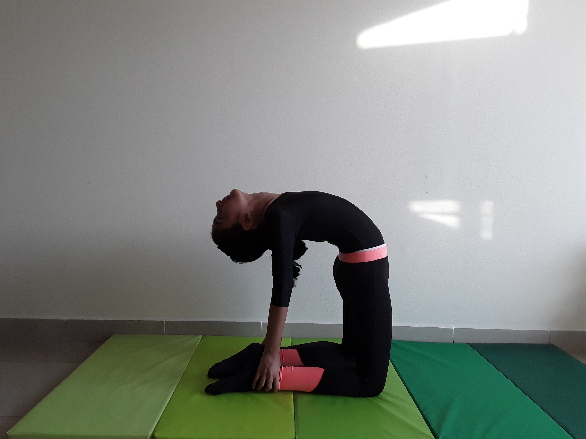

CAMEL POSE

Steps to perform Camel Pose
- Kneel with body upright and hips stacked over the knees. Take padding (a blanket or fold your mat so it is double thickness) under your knees if they are sensitive.
- Draw your hands up the side of your body until your palms reach the sides of your rib cage. Let your thumbs rest on the back of the ribs as the other four fingers wrap around the sides and fronts of the rib cage with elbows pointing out. With this grip, use your hands to lift the rib cage up for support as you start to open your chest toward the ceiling.
- Maintain the position of your chest as you reach your hands back one at a time to grasp your heels. If you need a little more height, tuck your toes under. Otherwise, the tops of the feet can be flat on the floor.
- Bring your hips forward so that they stay over your knees.
- If it feels good, let your head come back, opening your throat. If that doesn't work for your neck, you can keep the chin tucked instead.
- Release by bringing your chin toward your chest and hands to your hips. Firm your abs and support your lower back with your hands as you slowly bring your body to an upright kneeling position.